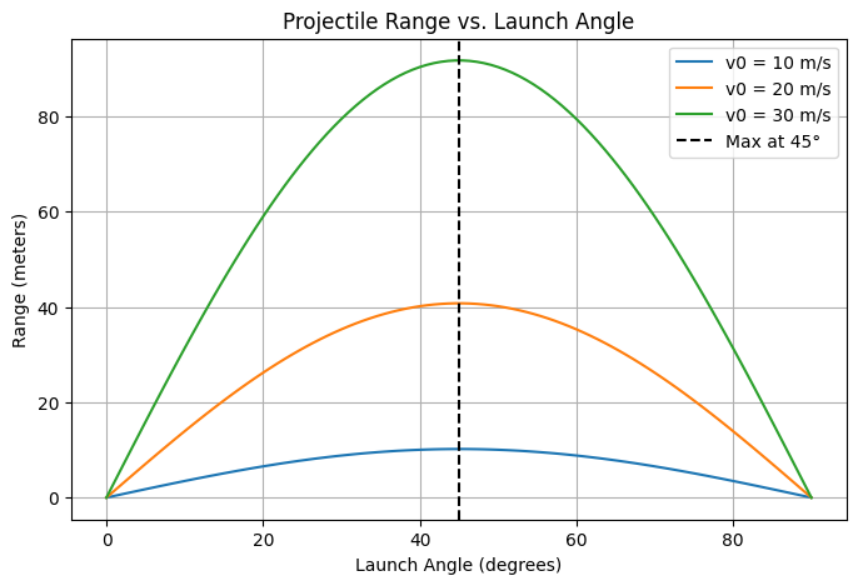
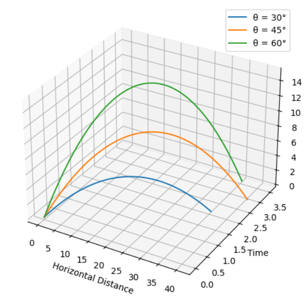
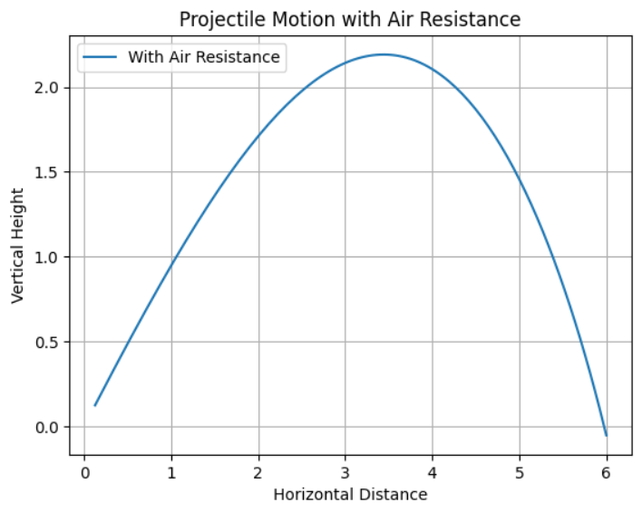

Investigating the Range as a Function of the Angle of Projection
1. Introduction
Projectile motion is a classical problem in physics, demonstrating fundamental principles of kinematics and dynamics. The study of projectile motion has extensive applications in fields like engineering, sports, ballistics, aerospace, and video game physics.
This report explores how the range of a projectile depends on its angle of projection. By analyzing these dependencies, we uncover important insights into real-world problems, from optimizing a soccer kick to launching spacecrafts.
Key Questions Explored:
- How does the range of a projectile change with launch angle?
- What is the optimal launch angle for maximum range?
- How do environmental factors (air resistance, wind, gravity variations) impact projectile motion?
2. Theoretical Foundations
2.1 Governing Equations of Motion
Projectile motion follows Newton’s Laws, particularly the equations of motion under uniform acceleration. Given an initial velocity \( v_0 \) and launch angle \( \theta \), we break the motion into:
Horizontal Motion
Vertical Motion
where:
- \( g \) is the acceleration due to gravity (9.81 m/s² on Earth).
2.2 Time of Flight
The projectile reaches the ground when \( y = 0 \):
$$
t_f = \frac{2 v_0 \sin(\theta)}{g}
$$
2.3 Range Equation
The horizontal distance (range) at landing is:
$$
R = v_0 \cos(\theta) t_f = \frac{v_0^2 \sin(2\theta)}{g}
$$
From this equation, we note:
- Max range occurs at \( \theta = 45^\circ \).
- Range is symmetric: \( 30^\circ \) and \( 60^\circ \) give the same range.
3. Advanced Theoretical Considerations
3.1 Finding the Maximum Range
Taking the derivative of \( R(\theta) \) and setting it to zero:
$$
\frac{dR}{d\theta} = \frac{2 v_0^2 \cos(2\theta)}{g} = 0
$$
Solving for \( \theta \):
$$
2\theta = 90^\circ \Rightarrow \theta = 45^\circ
$$
Thus, the maximum range is at \( 45^\circ \).
3.2 Effect of Air Resistance
With air resistance \( F_d = \frac{1}{2} C_d \rho A v^2 \), the equations become:
$$
m \frac{dv_x}{dt} = -F_d \cos(\theta)
$$
$$
m \frac{dv_y}{dt} = -mg - F_d \sin(\theta)
$$
These equations require numerical methods for solutions.
4. Python Implementation
4.1 Range vs. Angle (Basic Model)
import numpy as np
import matplotlib.pyplot as plt
def projectile_range(v0, theta, g=9.81):
return (v0**2 * np.sin(2 * np.radians(theta))) / g
angles = np.linspace(0, 90, 100)
v0_values = [10, 20, 30]
plt.figure(figsize=(8,5))
for v0 in v0_values:
ranges = [projectile_range(v0, theta) for theta in angles]
plt.plot(angles, ranges, label=f'v0 = {v0} m/s')
plt.axvline(45, linestyle='--', color='black', label='Max at 45°')
plt.xlabel('Launch Angle (degrees)')
plt.ylabel('Range (meters)')
plt.title('Projectile Range vs. Launch Angle')
plt.legend()
plt.grid()
plt.show()



5. Real-World Applications
Sports:
- Optimizing soccer free kicks, basketball shots, and javelin throws.
Engineering:
- Calculating projectile paths in ballistics and aerospace.
Space Science:
- Determining launch angles for interplanetary missions.
Video Games:
- Simulating realistic projectile motion in physics engines.
6. Conclusion & Future Work
Projectile motion is fundamental in physics, but real-world factors like air resistance, wind, and non-uniform gravity make it complex. Future studies can use:
- Machine Learning for predictive modeling of projectile behavior.
- CFD Simulations to analyze drag forces in different environments.
- Monte Carlo Methods for uncertainty analysis in real-world applications.
This study provides a detailed framework for analyzing projectile motion and lays the foundation for more advanced research in physics, engineering, and beyond.